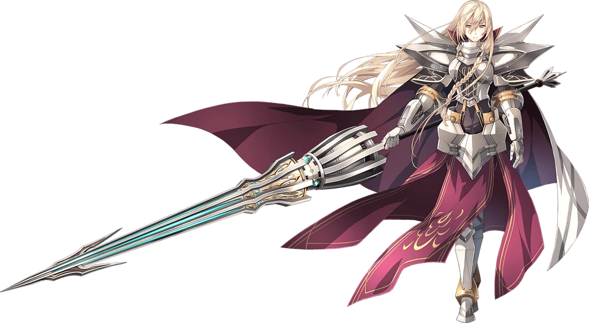
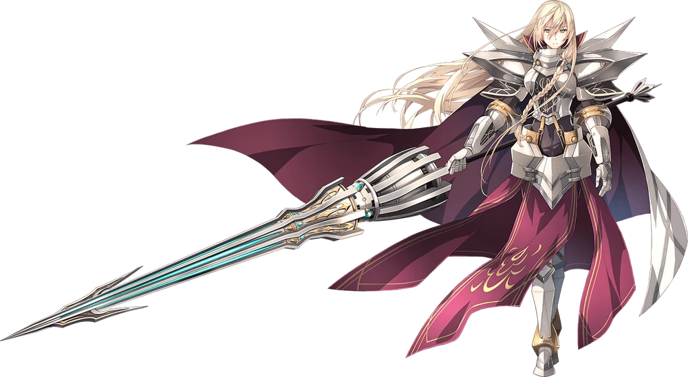

Background
 

Aregrion, The Argent Knight. A knight that has been active since the War of the Lions, 250 years ago. Pioted by a confidant of Drichels Reise Arnor; Lianne Sandlot, The Lance Maiden. 250 years ago during the War of the Lions, Lianne with the assistant of a Witch completed the trial in order to become the awakener of Aregrion causing her to stop aging. During this period in Lianne's life she was known as a Saint. After the War of the Lions followed the death of Drichels Resise Arnor which left the young Lianne to wander across Erebonia until she met the Grandmaster of Ouroboros. Once she became an Anguis, a high ranking member in Ouroboros, she had discarded her previous name of Lianne Sandlot and now is known as Arianrhod, The Steel Maiden.